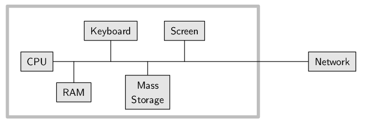
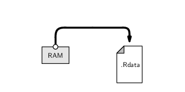
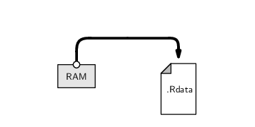

CE083 - Estatística Computacional I
Fernando Mayer
Agosto, 2016
Escrevendo código
- O computador (leia-se, nesse caso, o sistema operacional Windows) “proteje” o usuário dos detalhes sujos
- Isso é ruim? Sim!
- O usuário se acostuma com o computador ditando as regras
- É importante lembrar que é você quem deve dizer o que o computador deve fazer (nesse caso, com qual programa abrir certo arquivo)
Escrevendo código
- Para a maioria dos usuários, a interação com o computador se limita a clicar em links, selecionar menus e caixas de diálogo
- O problema com essa abordagem é que parece que o usuário é controlado pelo computador
- A verdade deve ser o oposto!
- É o usuário que possui o controle e deve dizer para o computador exatamente o que fazer
- Escrever código ainda tem a vantagem de deixar registrado tudo o que foi feito
Escrevendo código
Aprender a interagir com o computador através de uma linguagem de programação, coloca o usuário na sua posição original de poder!
Escrevendo código
Uma linguagem de programação nos permite interagir não só com outros softwares, mas também com o nosso hardware

Data Science? Estatística?

Data Science? Estatística?
- Conhecimento de matemática e estatística: é o que você está fazendo aqui
- Habilidade hacker:
- Saber programar (aqui vamos saber usar o R)
- Saber responder perguntas sozinho.
- Saber buscar respostas
- Experiência substancial: depende da área dos dados, da interação com o pesquisador, ou de buscar o conhecimento
Editores de texto
Uma característica importante de códigos de programação é que eles são em texto puro, por isso precisamos de um bom editor de textos
Características de um bom editor:
- Identação automática
- Complementação de parênteses
- Destaque de sintaxe (syntax highlighting)
- Numeração de linhas
- Auto completar comandos
Editores para o R
Windows
- Interface padrão: pouco recomendado
- Tinn-R
Linux
- Vim-R-plugin
- Gedit-R-plugin
- Rstudio: recomendado para iniciantes
- Emacs + ESS: altamente recomendado
Configuração inicial
Configurando o diretório de trabalho
- O diretório de trabalho é uma pasta onde o R será direcionado. Todos os arquivos que serão importados (base de dados, …) ou exportados (base de dados, gráficos, …) por ele ficarão nesta pasta.
- Existem duas maneiras de configurar o diretório de trabalho (suponha que vamos usar a pasta
~/estatcomp1):
Configurando o diretório de trabalho
1) Utilizando a função setwd() dentro do R:
2) Pelo menu do RStudio em Session > Set Working Directory > Choose Directory... Confira o diretório que está trabalhando com a função
O R como uma calculadora
O símbolo > indica que o R está pronto para receber um comando:
[1] 4
O símbolo > muda para + se o comando estiver incompleto:
[1] 4
Espaços entre os números não fazem diferença:
[1] 4
Para onde vão os resultados?
[1] 16


- Note que o resultado é apenas mostrado na tela, nada é salvo na memória (por enquanto)
O editor de scripts
- Para criar rotinas computacionais é necessário utilizar um editor de scripts.
- Clique em
File > New file > R script. Salve com a extensão .R.
- Para enviar comandos diretamente para o console, selecione-os e aperte
Ctrl + <Enter>.
- Para adicionar comentários ao script, utiliza-se o símbolo
# antes do texto e/ou comandos. O que estiver depois do símbolo não será interpretado pelo R. Portanto:
2 + 2 # esta linha será executada
# 2 + 2 esta linha não será executada
Operadores aritméticos
+ |
adição |
- |
subtração |
* |
multiplicação |
/ |
divisão |
^ |
potência |
exp() |
exponencial |
sqrt() |
raíz quadrada |
factorial() |
fatorial |
log(); log2(); log10() |
logaritmos |
Ordens de execução
As operações são realizadas sempre seguindo as prioridades:
- De dentro para fora de parênteses
()
- Multiplicação e divisão
- Adição e subtração
Ordens de execução
[1] 7
[1] -7
[1] -5
[1] -75
Exercícios
- Calcule a seguinte equação: \(32 + 16^2 - 25^3\)
- Divida o resultado por \(345\)
- Qual o resultado da expressão \(\frac{e^{-2} 2^{4} - 1}{4!}\)?
- E do logaritmo desta expressão?
“Salvando” resultados
Do exercício anterior
> x <- 32 + 16^2 - 25^3
> x
[1] -15337
[1] -44.45507
> (y <- (exp(-2) * 2^4 - 1)/factorial(4))
[1] 0.04855686
[1] -3.02502
“Salvando” resultados
Quando criamos uma variável (x, y), ela fica armazenada temporariamente na memória RAM.

Para saber quais objetos estão criados, usamos a função ls()
[1] "cara" "caracter" "cont" "da" "da2"
[6] "dados" "dados.clip" "dados.xls" "dados2" "datas.qui"
[11] "datas.ter" "fator" "ind" "iris" "la"
[16] "lis" "lista" "logico" "m" "ma"
[21] "mat" "matriz" "matriz2" "mtcars" "num"
[26] "ola.mundo" "perd" "texto" "topo" "w"
[31] "x" "xf" "y" "z"
“Salvando” resultados
Estas variáveis ficam armazenadas no chamado workspace do R
- O workspace consiste de tudo que or criado durante uma sessão do R, armazenado na memória RAM
Para efetivamente salvar esas variáveis, podemos armazenar esse workspace do R em disco, em um arquivo chamdo .Rdata
 

“Salvando” resultados
- Quando o R é iniciado em um diretório com um arquivo
.Rdata, as variáveis salvas são automaticamente carregadas
- No entanto, é sempre melhor salvar os dados e o script, assim é possível gerar os resultados novamente, sem salvar nada sem necessidade
- Veremos mais pra frente como salvar variáveis específicas, por exemplo, resultados de uma análise que leva muito tempo para ser executada
- O mais importante é salvar o código, assim sabemos como chegamos a determinado resultado, e podemos recriá-lo depois
Finalizando o programa
A qualquer momento durante uma sessão você pode usar o comando
No RStudio:
File > Save As...- Na janela que abrir, digite o nome do arquivo (por exemplo
script_aula1) e salve
- Automaticamente o script será salvo com a extensão
.R (nesse caso script_aula1.R) no diretório de trabalho que você configurou no início
Finalizando o programa
Alternativamente, você pode também salvar toda sua área de trabalho, clicando em Workspace > Save As Default Workspace. Este processo irá gerar dois arquivos:
.Rdata: contém todos os objetos criados durante uma sessão. Não é necessário (e nem recomendado) dar um nome antes do ponto. Dessa forma, a próxima vez que o programa for iniciado neste diretório, a área de trabalho será carregada automaticamente..Rhistory: um arquivo texto que contém todos os comandos que foram digitados no console.